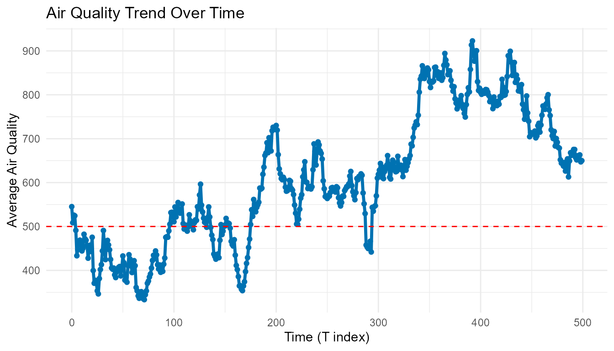

interactive_analysis
Janhavi Bayanwar
interactive_analysis.Rmd
library(jgb)
library(tidyr)
library(dplyr)
#>
#> Attaching package: 'dplyr'
#> The following objects are masked from 'package:stats':
#>
#> filter, lag
#> The following objects are masked from 'package:base':
#>
#> intersect, setdiff, setequal, union
library(ggplot2)Introduction
This vignette demonstrates how to explore the air quality data stored
in the sensor_data dataset, included in the
jgb package.
The dataset comes from PurpleAir sensors across the SF Bay Area and
contains measurements of air quality over time.
The Data
Let’s load and preview the dataset:
sensor_data <- jgb::sensor_data
head(sensor_data)
#> # A tibble: 6 × 3
#> Coordinates_by_time Time Value
#> <chr> <chr> <dbl>
#> 1 36.75225 -121.622324 T0 3.44
#> 2 36.75225 -121.622324 T1 3.04
#> 3 36.75225 -121.622324 T2 2.66
#> 4 36.75225 -121.622324 T3 2.4
#> 5 36.75225 -121.622324 T4 2.34
#> 6 36.75225 -121.622324 T5 2.19The dataset contains columns representing coordinates, time, and measured air quality values.
Data Preparation
We first split the combined text field into proper variables for latitude, longitude, time, and value.
if ("Coordinates_by_time.Time.Value" %in% names(sensor_data)) {
# Case 1: single combined column
sensor_clean <- sensor_data %>%
tidyr::separate(Coordinates_by_time.Time.Value,
into = c("Coordinates", "Time", "Value"),
sep = ",") %>%
tidyr::separate(Coordinates, into = c("lat", "lon"), sep = " ") %>%
mutate(
lat = as.numeric(lat),
lon = as.numeric(lon),
Value = as.numeric(Value),
time_num = as.numeric(gsub("T", "", Time))
)
} else if (all(c("Coordinates_by_time", "Time", "Value") %in% names(sensor_data))) {
# Case 2: already separate columns
sensor_clean <- sensor_data %>%
tidyr::separate(Coordinates_by_time, into = c("lat", "lon"), sep = " ") %>%
dplyr::mutate(
lat = as.numeric(lat),
lon = as.numeric(lon),
Value = as.numeric(Value),
time_num = as.numeric(gsub("T", "", Time))
)
} else {
stop("sensor_data has unexpected column structure. Check the dataset.")
}
head(sensor_clean)
#> # A tibble: 6 × 5
#> lat lon Time Value time_num
#> <dbl> <dbl> <chr> <dbl> <dbl>
#> 1 36.8 -122. T0 3.44 0
#> 2 36.8 -122. T1 3.04 1
#> 3 36.8 -122. T2 2.66 2
#> 4 36.8 -122. T3 2.4 3
#> 5 36.8 -122. T4 2.34 4
#> 6 36.8 -122. T5 2.19 5Visualizing Air Quality Over Time
The following plot shows the average air quality value across time points.
avg_trend <- sensor_clean %>%
group_by(time_num) %>%
summarise(mean_val = mean(Value, na.rm = TRUE))
ggplot(avg_trend, aes(x = time_num, y = mean_val)) +
geom_line(color = "#0072B2", linewidth = 1.2) +
geom_point(color = "#0072B2") +
geom_hline(yintercept = 500, color = "red", linetype = "dashed") +
labs(
x = "Time (T index)",
y = "Average Air Quality",
title = "Air Quality Trend Over Time"
) +
theme_minimal()
Interactive App
To explore this dataset interactively, use the Shiny app included in the package:
jgb::launch_app()This app displays: - A map view showing spatial air
quality variation,
- A trend view displaying the time evolution of air
quality levels.